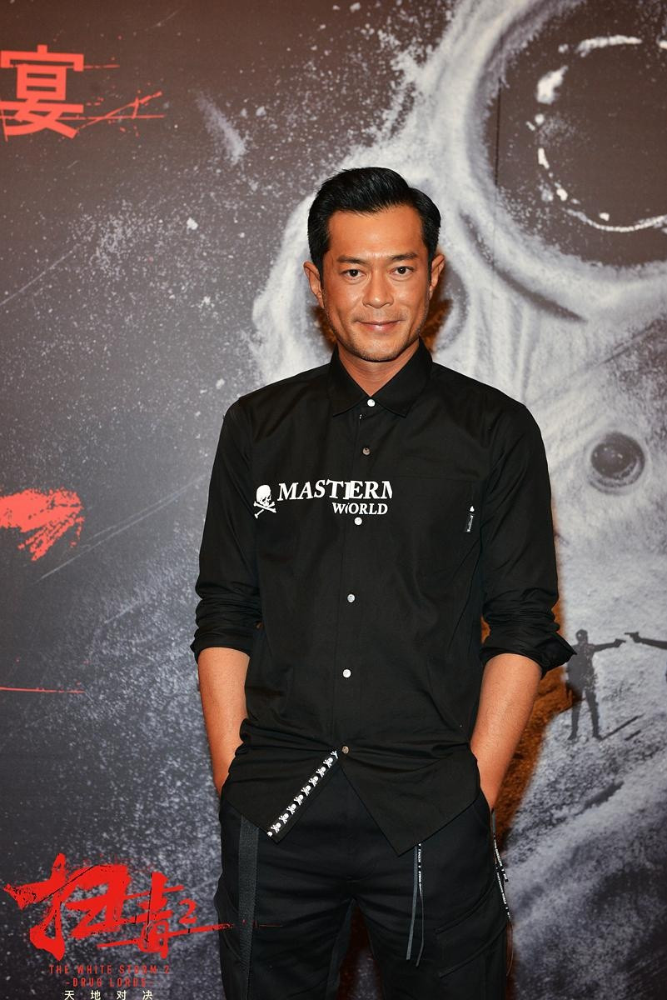

香港影帝-古天乐
-
简介
古天乐（英文名：Louis Koo，昵称：古仔，1970年10月21日-），出生于中国香港，毕业于香港迦密中学，中国香港演员、男歌手，中国香港演艺人协会会长。古天乐早年在武侠剧《神雕侠侣》中饰演“杨过”获得大量关注。其后，他将工作重心放入电影，参演《窃听风云》《毒战》《门徒》等多部具有国际影响力的电影，成为中国香港电影代表性男演员。他多次获得金像奖、金马奖、世界杰出华人奖等荣誉。除演艺事业外，他还热衷慈善公益，已捐百所慈善学校。

个人经历
-
早年经历
古天乐中学就读于迦密中学，成为演员之前做过时装广告及MTV模特，1991年至1993年期间参与拍摄过多名歌手的MTV。
1993年加入无线电视，成为全经理人合约艺员。是电视专业训练中心第五期艺员训练班旁听生。1993年，古天乐开始做广告模特，大街小巷，古天乐的身影被放大成巨幅广告挂在摩天楼上展示。
1994年的TVB台庆上，身穿露背装头插黑羽的汪明荃在一群年轻人拥簇下载歌载舞，她背后那个年轻人就是24岁时的古天乐，他偶尔在电视剧里跑跑龙套，身份是路人甲乙丙丁。古天乐刚进无线不久，做过多份不同工作，有次模特经理人找不到广告男主角，古天乐被迫顶上，之后古天乐出现在90年代初的许多卡拉OK伴唱MV里，直至被无线挖掘。
.jpg)
古天乐 -
社会经历
2003年在艾滋公益宣传片《爱在阳光下》饰演厨师。同年8月台湾暴风灾害，古天乐积极捐助物资和捐资100万元善款救助灾民。 通过“古天乐慈善基金会”在贵州省遵义市习水县永安镇捐款修建永安镇古天乐小学、在贵州省遵义市习水县桃林乡捐款修建桃林乡古天乐小学、在广西省梧州市藤县岭景镇捐款修建南荣古天乐小学、在广西省梧州市藤县琅南镇捐款修建琅南古天乐小学。、在贵州省遵义县虾子镇捐款修建红光古天乐小学、在贵州省遵义县乐山镇捐款修建乐山镇古天乐中心校。
通过“古天乐慈善基金会”在贵州省绥阳县蒲场镇捐款修建七九古天乐小学。通过“古天乐慈善基金会”在甘肃省张掖市甘州区捐款修建五一中心校古天乐教学楼。通过“古天乐慈善基金会”向贫困地区捐款修建双龙古天乐中心小学。
2007年12月20日古天乐获联合国儿童基金会委任为“联合国儿童基金大使”，并宣布新书《玩具大战》的义卖善款将捐献给联合国儿童基金会。
2008年11月4日古天乐慈善基金“HKT as trustee of Koo Tin Lok Charitable Foundation”正式成立。古天乐成立基金最主要是因为受2008年5月12日四川地震的启发。古天乐捐赠100万元善款帮助四川大地震的灾后重建。
2009年古天乐代表的联合国儿童基金会向受灾地区捐赠了价值约2000万美元的紧急援助物资，古天乐被联合国儿童基金会授予“爱心大使”称号。2009年，古天乐成立慈善基金，到2011年在内地捐钱建了49间学校、20多间医疗所和50口水窖。并会每月派出监察人员去到内地各城镇了解，看城镇是否缺学校、医疗所或水窖。截至2014年5月，古天乐在大陆捐建的学校和宿舍已达63座，粗估5年捐助金额达1300万元港币（约5046万台币）。[53]
2010年5月古天乐通过“古天乐慈善基金会”在甘肃省会宁县捐建了50眼“爱心水窖”。同年，古天乐被联合国儿童基金会授予“爱心大使”称号。
2015年1月24日，古天乐获邀担任第39届香港国际电影节大使，推动电影文化和相关活动。
2015年3月，在慈善基金的安排下，有三个家庭共十多人到古天乐位于火炭的玩具仓参观，古天乐亲自接待，他更送上礼物给到访儿童。[54]
2016年3月22日，古天乐出席第40届香港电影节开幕式。[55]
2016年9月11日，古巨基邀古天乐翻唱经典歌曲《当年情》，并于2016年9月12日零时零分曝光，纪念一代巨星张国荣。[56]
2017年2月19日，“伸手助人协会”在铜锣湾闹市举行《曲奇传爱日义卖活动》，古天乐与其粉丝义卖团队支持长者曲奇义卖，送礼物陪吃饭哄老人开心。
2018年7月11日出版的《小行星通告》新增了四十五颗中文小行星名称。 其中一颗小行星以香港著名艺人古天乐命名，编号55382 Kootinlok，古天乐小行星，由杨光宇先生在2001年9月25日发现，临时编号为2001 SS265。

古天乐
古天乐
古天乐 -
荣誉经历
2015年，古天乐全年共拍了14部电影（《神探驾到》、《冲上云霄》、《可爱的你》、《杀破狼 2》、《迷城》和《巴黎假期》等），13个广告代言，再加品牌商演，赚了超过4亿港币（约3.3亿人民币），连续第3年成为港星的吸金王，位列2015年港星收入排行榜第一名（4.15亿）。
2016年1月，古天乐在《中国慈善家》之中国慈善名人榜中排名第14位。
2017年9月22日，福布斯中国发布“2017中国名人榜”，其中古天乐位列第61位。
2018年1月31日，“2017中国慈善名人榜TOP30”揭晓，古天乐排名第14。
.jpg)
古天乐
人物评价
2008年到2012年，已经有几十间中、小学以古天乐名字命名，古天乐行善多年。古天乐每个月都会通过自己的慈善基金捐钱给那些需要帮助的孩子。而在很多被捐助孩子心里，古天乐就是个80岁的老善人，慈眉善目，趁你睡觉的时候，会像圣诞老人一样默默地把“礼物”放进烟囱，可是谁都没见过他的真面目。行善不张扬，默默无闻的做好事，真乃明星中的明星，偶像中的榜样。一个主动行善的偶像，给慈善事业带来的力量是巨大的，古天乐低调行善的意义正在于此，不强调，不做作，不求回报的付出，是一名“慈善超人”。（腾讯网评价）
黝黑的肤色、富有磁性的声音、迷人的眼神，是古天乐通行娱乐圈的“撒手锏”（南方都市报评）。皮肤黝黑、身材挺拔、面容英俊、神色阴晴不定、介于男孩与男人之间的气质，这就是古天乐给观众的印象。无论是《神雕侠侣》里的杨过、《圆月弯刀》里的丁鹏，还是《创世纪》里的张自力、《乾隆大帝》中的乾隆，个个亦正亦邪、孤独狂傲、抑郁而专情，如同一匹桀骜不驯、绝不屈服的黑马，古天乐赋予了这些角色绝美的精神内核与独特气质（城市快报评）
。
古天乐凭借《神雕侠侣》中颜如冠玉眉目如画的杨过被大众认知，他亦正亦邪的气质让这个本有些夸张的说法显得真实且有说服力，他就此成为诸多金庸迷心目中当仁不让的神雕大侠；古天乐在《圆月弯刀》里，将冷峻细腻又狂放不羁的丁鹏诠释得淋漓尽致，亦正亦邪的角色成为了他的拿手好戏。此后《天地男儿》中深情专一的叶承康、《乾隆大帝》里千回百转的爱新觉罗·弘历，他都演来得心应手（新民晚报评）。
古天乐在2014至2016年，仅仅三年出演了高达16部电影，堪称香港演艺界的霸屏之王，其优秀的演技与敬业精神，已然成为香港电影的符号之一（中国青年网评）。
古天乐
经典台词
很多梦想是真的可以实现的。很多时候，不是我们自己没有本事，而是我们故步自封，不愿意去尝试，或者不愿意去努力，只要行出第一步，一定会比你停下来得更丰盛
我只是生活在浩瀚宇宙中细微的一角、重复着每个人的言行举止，但是就算挣扎又如何，并不会阻止地球运转，也不会妨碍生命演进，那就别钻牛角尖求一个是非黑白。
没有人能不流一滴汗就成功，成功的另一个名字正是努力
凡事尽能力去做，只要肯尽力去做，彼岸自然达到。但反过来，一味的只知道说，根本从来无尽力过，莫讲事业，连做人都不会成功。
有时困难在想象中会被放大一百倍。事实上，一旦勇敢地走出了解决问题的第一步，就会发现那些麻烦与困难，有时只是自己吓自己
我一生只哭了两次，一次是我出世的时候，那次我不知道，是你告诉我；第二次是你走的时候，但你不知道！
时间总以我们想像不到的速度流逝，真的名副其实。
做人，一定要有推动力，因为有推动力，自然见到目标。但切忌急进，不要逼自己，如果不留任何喘息空间给自己，你只会逼到自己透不过气。
不要试图改变自己的一半，要学会接受一个人的一切。既接受他的优点，也要接受他的缺点。
得与失只在一念之间，似是失去了嘛？但可能也就得到了，相同的你得到什么，在某种层面上也失去了什么，就看你的取舍是什么？
做人，一定要有推动力，因为有推动力，自然见到目标。但切忌急进，不要逼自己，如果不留任何喘息空间给自己，你只会逼到自己透不过气。
一块铁要铸造成精美容器，必先经洪炉烈火的溶烧及冶炼，即使看起来像一块废铁也好，谁说不可以炼成一件精美的容器？正如当我们面对各种艰辛的考验，像被洪炉烈火燃烧一样，必须经过千锤百炼，才能打造成为一个成熟的人